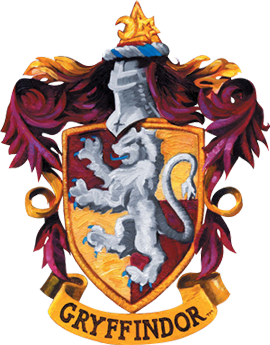

Opiekun domu:
Barwy:
Zwierzę z herbu:
Założyciel:
Mieszkańcy:
Relikwia założyciela:
Duch domu:
Wejście:
Miejsce:
Cenione cechy charakteru:
Minerwa McGonagall
Złoto i Czerwień
Lew
Godryk Gryffindor
Gryfoni
Miecz Gryffindoru i Tiara Przydziału
Prawie Bezgłowy Nick
za obrazem Grubej Damy, na siódmym piętrze
wieża Gryffindoru
odwaga, szczerość, szlachetność, prawość i sprawiedliwość